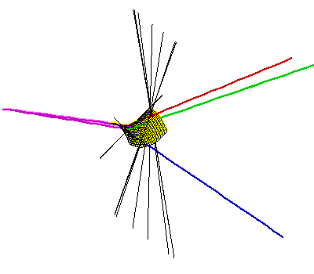

We ask for the maximum possible number, because the minimum is zero: If the four triangles are sufficiently far apart, say at four corners of a very large room, then there will be no such common transversals.
Currently the best answer to this question is that the maximum number is between 62 and 162, with an upper bound of 156 if the triangles are disjoint. The upper bound is almost surely not the best possible, and we also doubt the optimality of the lower bound. This lower bound is due to a construction that we describe in this page (linked to the picture below on the right). This construction involves perturbing four line segments having 2 common transversals, and each of the resulting triangles have one extremely small angle - they are quite thin. Our best construction involving four fat triangles has 40 common transversals. A description of the computer search we used to find this example is linked to the picture on the left below, as well as animations.
This WWW page accompanies our article on this subject,
On the number of line tangents to four
triangles in three-dimensional space.
The pictures are linked to further discussion
|
|
 | |
| Animations: 841 kB 2100 kB 4198 kB. | Animations: 86 kB 215 kB. 526 kB. |
{kind=link}
{kind=link}
{kind=link}
{kind=link}
{kind=link}
{kind=link}